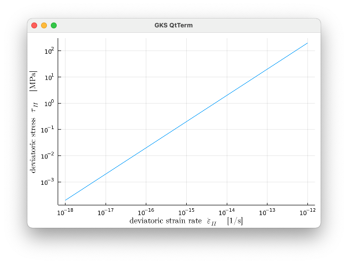
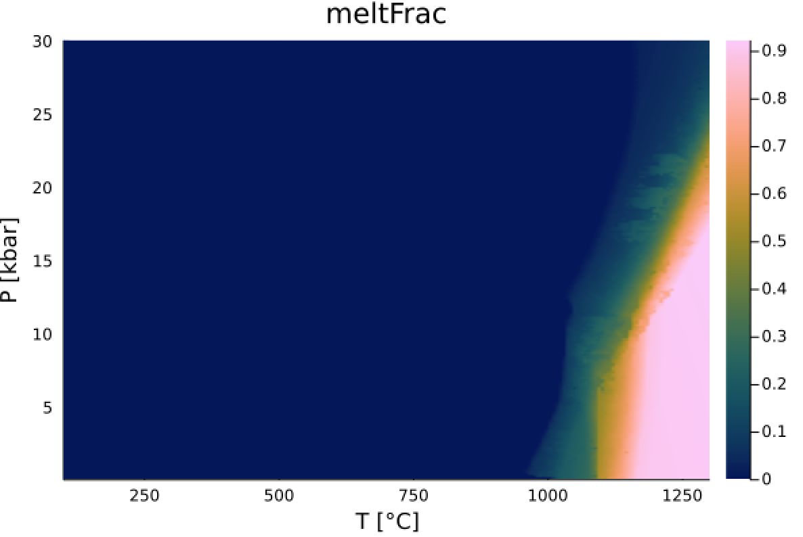

Plotting
We provide a number of plotting routines. Note that these plotting routines only become available once the Plots package is loaded.
Plot CreepLaws
GeoParams.PlotStressStrainrate_CreepLaw — FunctionPlotStressStrainrate_CreepLaw(x::AbstractCreepLaw; p::CreepLawParams=nothing, Strainrate=(1e-18,1e-12), CreatePlot::Bool=false)Plots deviatoric stress versus deviatoric strain rate for a single creeplaw. Note: if you want to create plots or use the CreatePlot=true option you need to install the Plots.jl package in julia which is not added as a dependency here (as it is a rather large dependency).
Example 1
julia> x=LinearViscous()
Linear viscosity: η=1.0e20 Pa s
julia> Tau_II, Eps_II, = PlotStressStrainrate_CreepLaw(x);Next you can plot this with
julia> using Plots;
julia> plot(ustrip(Eps_II),ustrip(Tau_II), xaxis=:log, yaxis=:log,xlabel="strain rate [1/s]",ylabel="Dev. Stress [MPa]")Note that ustrip removes the units of the arrays, as many of the plotting packages don't know how to deal with that.
You could also have done:
julia> using Plots;
julia> Tau_II, Eps_II, pl = PlotStressStrainrate_CreepLaw(x,CreatePlot=true);which will generate the following plot 
The plot can be customized as
julia> plot(pl, title="Linear viscosity", linecolor=:red)See the Plots.jl package for more options.
GeoParams.PlotHeatCapacity — FunctionT,Cp,plt = PlotHeatCapacity(cp::AbstractHeatCapacity; T=nothing, plt=nothing, lbl=nothing)Creates a plot of temperature T vs. heat capacity, as specified in cp (which can be temperature-dependent).
Optional parameters
- T: temperature range
- plt: a previously generated plotting object
- lbl: label of the curve
Example
julia> cp = T_HeatCapacity_Whittacker()
julia> T,Cp,plt = PlotHeatCapacity(cp)you can now save the figure to disk with:
julia> using Plots
julia> savefig(plt,"Tdependent_heatcapacity.png")GeoParams.PlotConductivity — FunctionT,Kk,plt = PlotConductivity(cp::AbstractConductivity; T=nothing, plt=nothing, lbl=nothing)Creates a plot of temperature T vs. thermal conductivity, as specified in k (which can be temperature-dependent).
Optional parameters
T: temperature rangeplt: a previously generated plotting objectlbl: label of the curve
Example
julia> k = T_Conductivity_Whittacker()
julia> T,KK,plt = PlotConductivity(k)you can now save the figure to disk with:
julia> using Plots
julia> savefig(plt,"Tdependent_conductivity.png")Missing docstring for GeoParams.PlotMeltFraction. Check Documenter's build log for details.
GeoParams.PlotPhaseDiagram — Functionplt, data, Tvec, Pvec = PlotPhaseDiagram(p::PhaseDiagram_LookupTable; fieldname::Symbol, Tvec=nothing, Pvec=nothing)Plots a phase diagram as a function of T (x-axis) and P (y-axis). We either use the default ranges of the diagram, or you can specify the temperature and pressure ranges (while specifying units). The return arguments are the plotting object plt (so you can modify properties) as well as the data that is being plotted
Example
julia> PD_data = Read_LaMEM_Perple_X_Diagram("Peridotite.in")
Perple_X/LaMEM Phase Diagram Lookup Table:
File : Peridotite.in
T : 293.0 - 1573.000039
P : 1.0e7 - 2.9999999944e9
fields : :meltRho, :meltRho, :meltFrac, :rockRho, :Rho, :rockVp
:rockVs, :rockVpVs, :meltVp, :meltVs, :meltVpVs
:Vp, :Vs, :VpVs, :cpxFrac
julia> PlotPhaseDiagram(PD_data,:meltFrac, Tvec=(100:1:1400).*C, Pvec=(.1:.1:30).*kbar )This will generate the following plot 
You can also use the default pressure/temperature ranges in the diagrams:
julia> PlotPhaseDiagram(PD_data,:Rho)